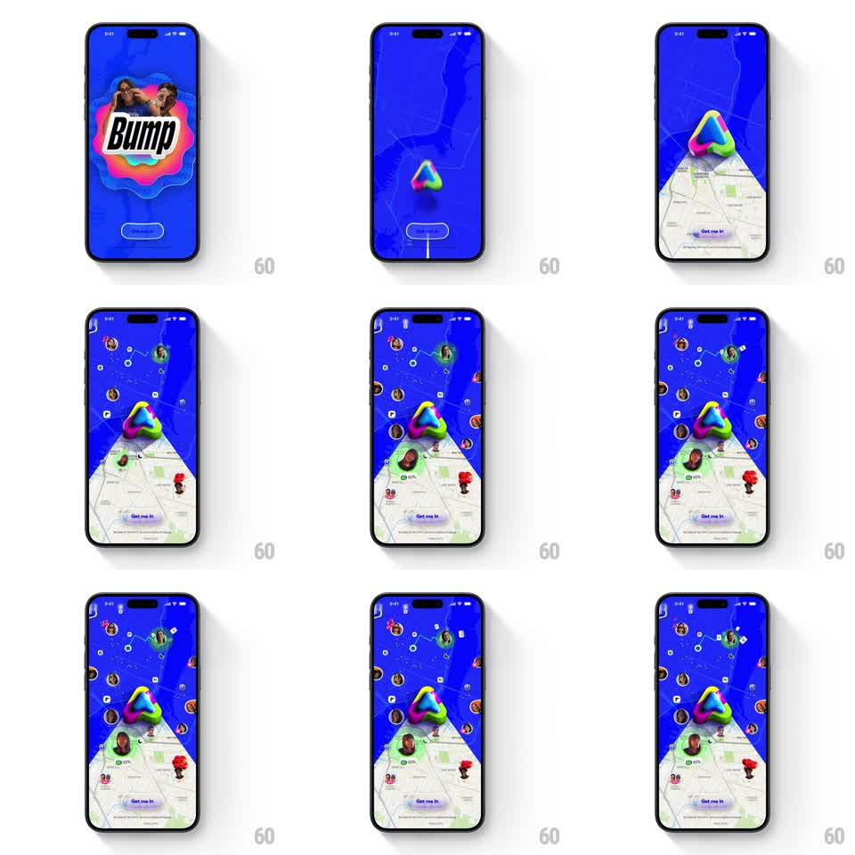

Media
Frame-by-frame

Rebuild this animation 1:1: Bump's splash - the wordmark over a paint blob morphs into a 3D glossy blob logo, a map plane tilts up into 3D perspective from the bottom, and avatar pins drop onto it with springy bounces while radar rings pulse, above a "Get me in" button.

Rebuild this animation 1:1: Bump's splash - the wordmark over a paint blob morphs into a 3D glossy blob logo, a map plane tilts up into 3D perspective from the bottom, and avatar pins drop onto it with springy bounces while radar rings pulse, above a "Get me in" button. ## Integration Integration: stack-agnostic spec - springs given as stiffness/damping, timed motions as duration + curve; map every value to your framework and animation library of choice. ## Scene Splash on a saturated blue field. Opening: "Bump" wordmark over a pink/orange paint blob with two faces. Main state: a glossy rainbow 3D blob floating top-center, a map plane receding in 3D perspective from mid-screen to the bottom edge, circular avatar pins scattered across it, and a pill button "Get me in". ## Motion spec Pattern: one-shot splash - logo morph, perspective map reveal, springy avatar drops. - The paint blob and wordmark morph into the 3D blob (scale 1.2 -> 1, rotateY 180deg, 500ms, ease-out) as the wordmark fades (200ms). - The map unfolds from the bottom edge, rotating from flat (rotateX 0deg) to a 60deg perspective tilt (600ms, ease-out) while fading in. - Avatars drop from above one by one (translate -120px -> 0, spring ~300/18, 300ms, 120ms stagger) with a visible bounce, then pulse a soft radar ring (scale 1 -> 2, fade out, 1.5s loop, staggered). - The 3D blob idles with a slow wobble (rotate +/- 5deg, 3s) throughout. - "Get me in" slides up last (translate 40px -> 0, 300ms, ease-out). ## Calibration - The map tilt is the reveal - it should feel like the world opening up under the blob. - Avatar bounces are playful springs; one bounce, no jitter tail. ## Reduced motion Logo crossfades (200ms); map fades in pre-tilted; avatars fade in at final positions without rings. ## Don't miss - The map's top edge vanishes into the blue - perspective fade, no hard horizon line. - The blob and the map never overlap; the blob floats above the vanishing point.